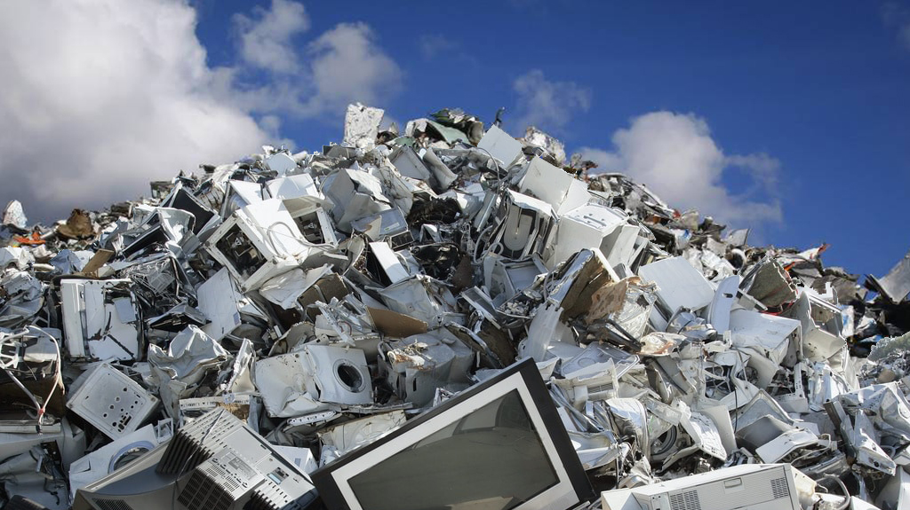
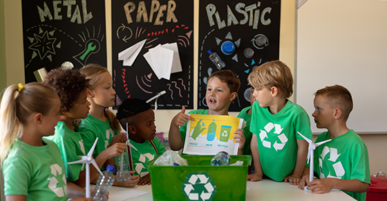
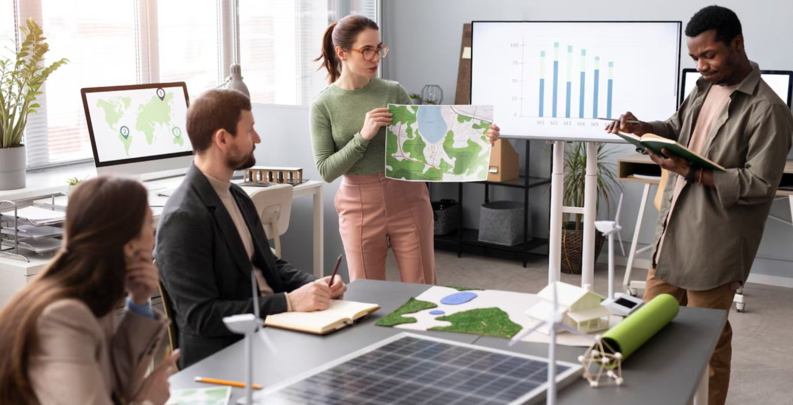
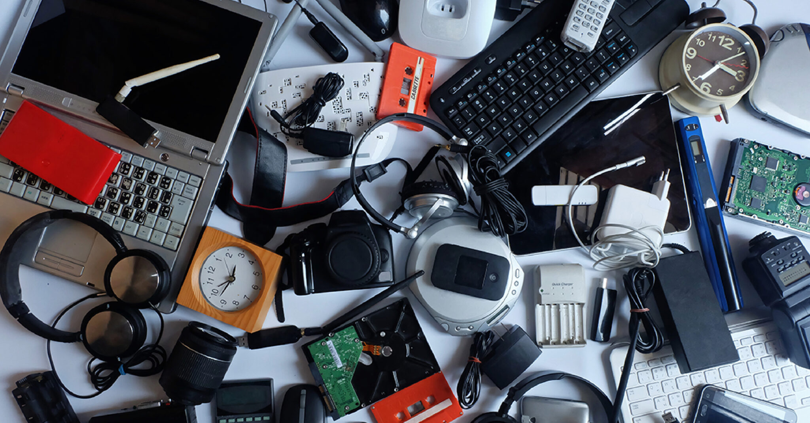
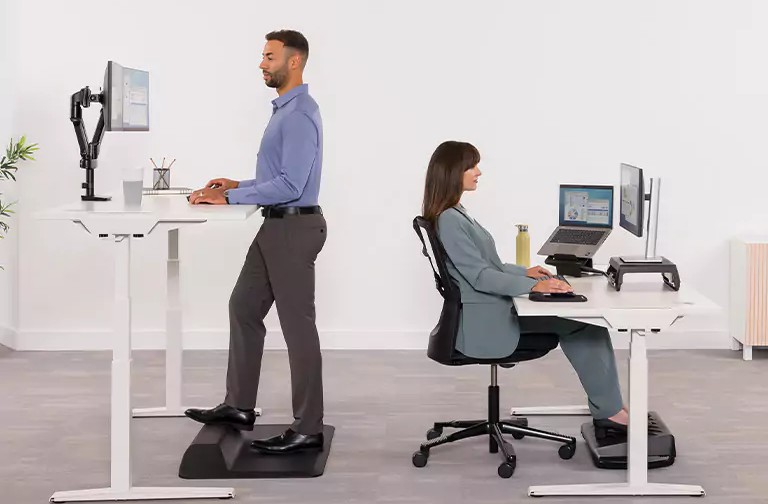
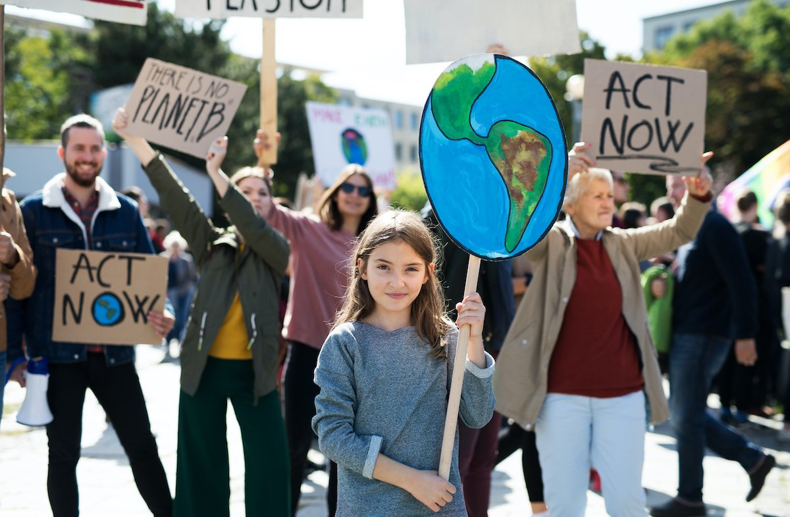

Computers & Environment
How to Reduce Computers' Impacts on the Environment

Environmental and Health Impacts

Corporate Sustainability Policies

Ergonomic Standards for Human Health
Computers & Environment